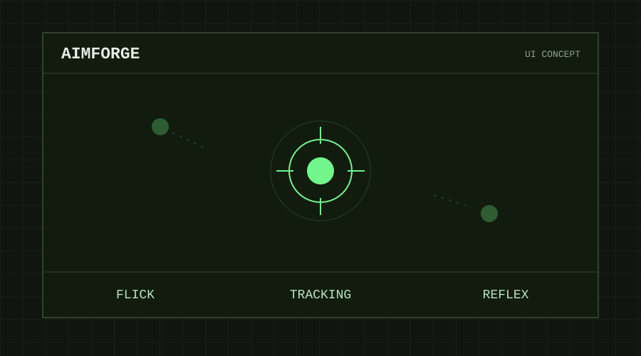

PROJECT / 003 — AIM TRAINER
AimForge
エイム練習アプリ.
フリック・トラッキング・反応速度を練習できるWebアプリです。結果の保存やCSV出力にも対応しています。
HTML / CSSJavaScriptCanvas

01 / OVERVIEW
マウス操作を、繰り返し練習する
表示された的をクリックするフリック、動く的を追うトラッキング、的が現れるまで待ってクリックする反応速度の3モードを備えた、ブラウザーで動くエイム練習アプリです。
02 / FEATURES
練習から記録の振り返りまで
- モード・難易度・練習時間を選択
- 直近100件の結果をブラウザー内に保存し、CSVで出力
- タブを離れたときの自動一時停止
- 効果音と全画面表示に対応
03 / CONTROLS
操作方法
フリックと反応速度は的をクリックし、トラッキングは左ボタンを押したまま的を追います。Spaceで開始・一時停止・再開、Escで中断できます。中断した練習は記録に残りません。
04 / IMPLEMENTATION
ブラウザーだけで動く構成
HTML・CSS・JavaScriptとCanvasで構成し、ゲーム処理と画面制御を分けています。外部フォントやライブラリを読み込まず、記録はlocalStorageに保存します。同じモード・難易度・時間で結果を比較できます。